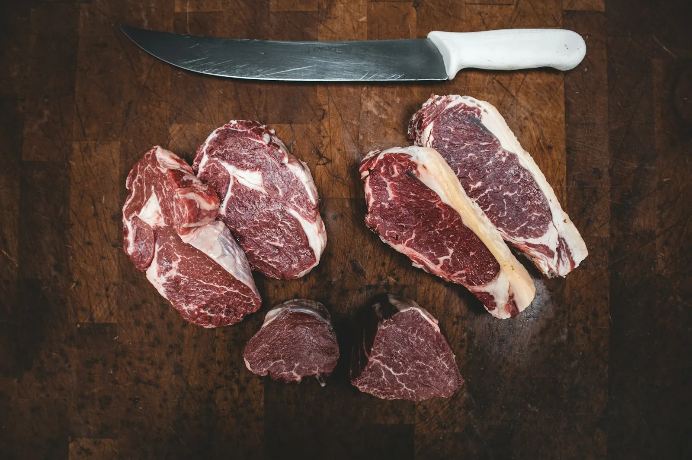
Rundvlees
Steak, entrecote of stoofvlees. Zeg wat je maakt, dan krijg je het juiste stuk.
Bij D'Haene - De Clercq in Izegem koop je vers vlees, vleeswaren en specialiteiten bij mensen die weten wat ze verkopen. Vraag gerust hoe lang het in de pan moet. Dat hoort erbij.
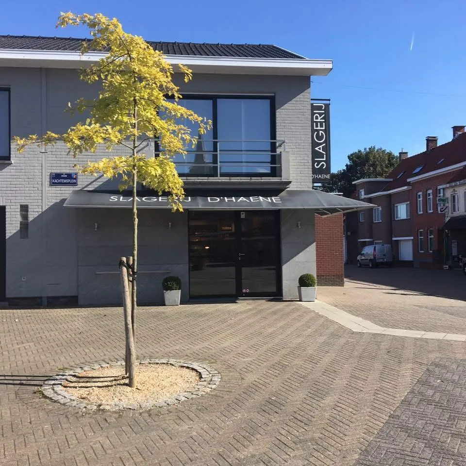
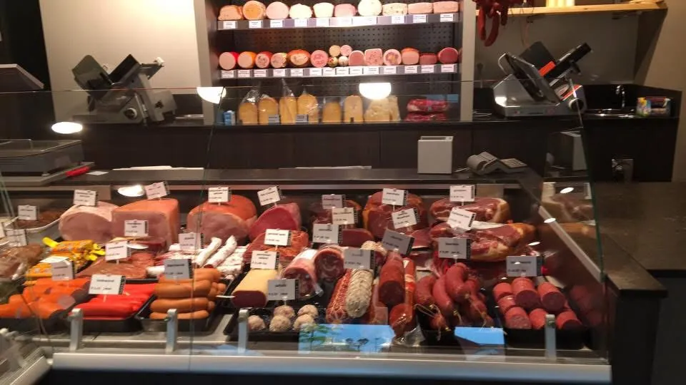
Wie binnenkomt, ziet het meteen: een lange toonbank vol vers vlees, vleeswaren en eigen specialiteiten. Klanten schrijven het zelf: alles verzorgd en net.
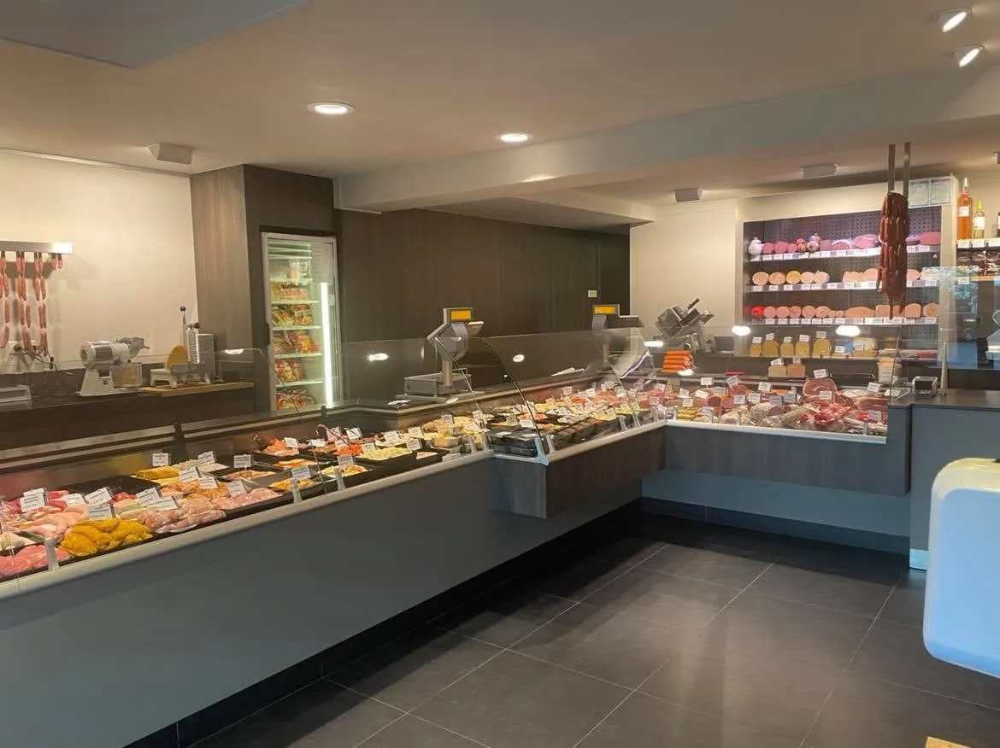
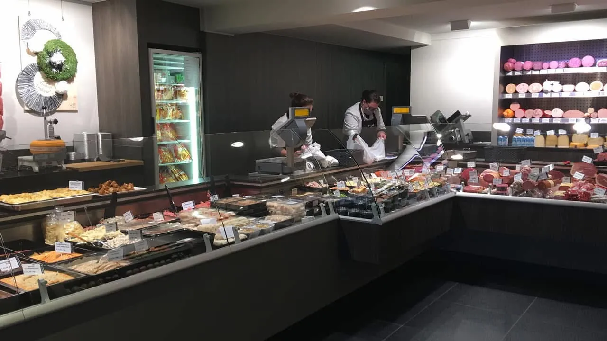
Wat er precies ligt, hangt af van de dag en het seizoen. Zoek je iets speciaals, bel dan even op voorhand.

Steak, entrecote of stoofvlees. Zeg wat je maakt, dan krijg je het juiste stuk.
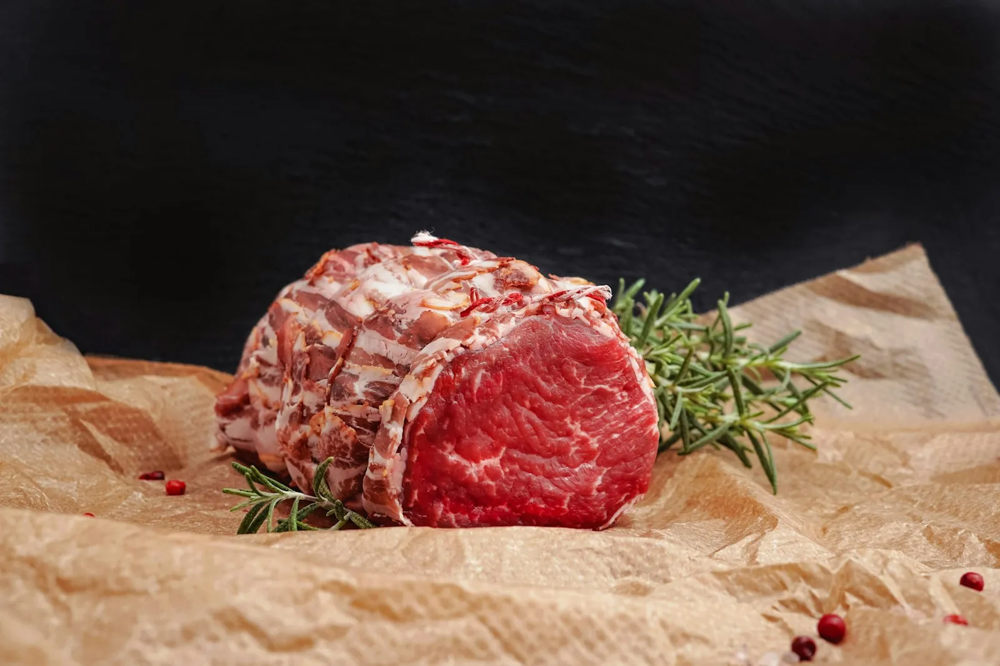
Voor de oven op zondag, met uitleg over hoe lang en hoe warm.
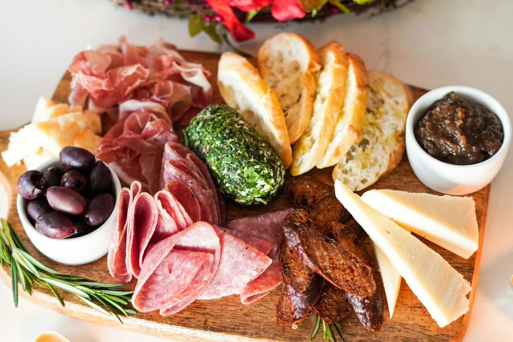
Een uitgebreid aanbod voor op de boterham of voor een plankje bij het aperitief.
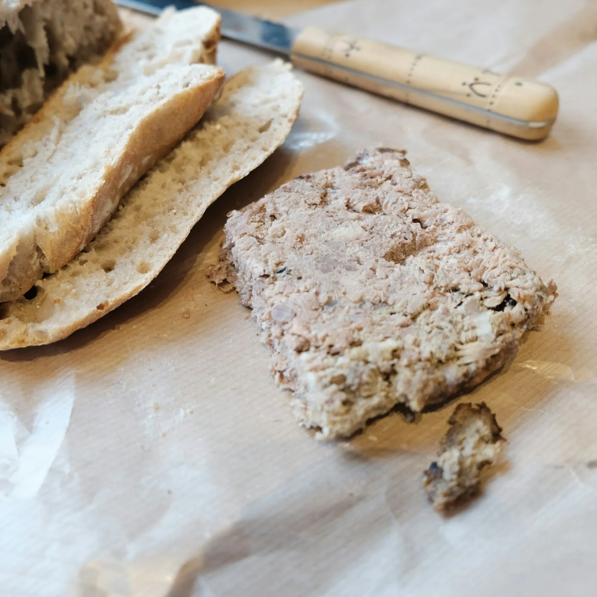
Bereidingen van de slager zelf. Vraag gerust wat er vandaag ligt.
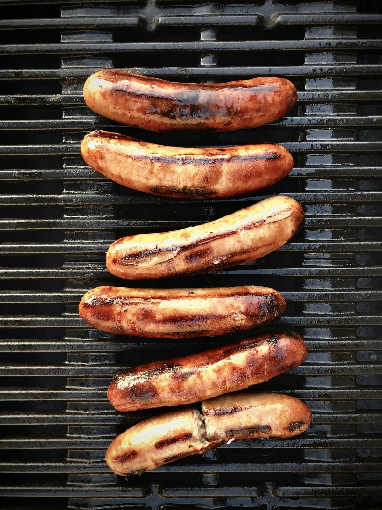
Als het weer meezit. Zeg met hoeveel je bent, dan wordt er mee gerekend.
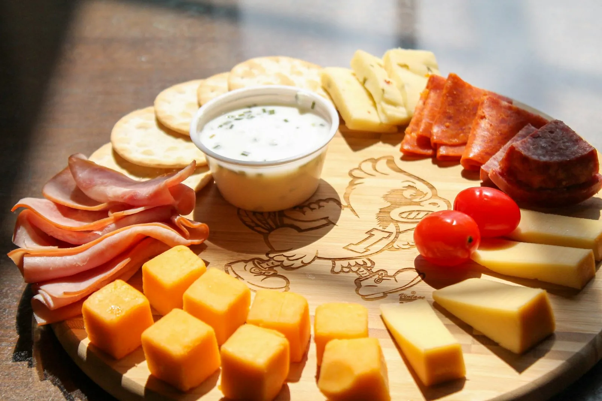
Communie, verjaardag of familiefeest? Bel op voorhand, dan ligt alles klaar.
Kies wat je maakt en met hoeveel jullie zijn. Je krijgt meteen een richtwaarde om te bestellen.
Ongeveer 200 gram per volwassene.
Bel om te bestellenEen richtwaarde voor rauw vlees. Aan de toonbank wordt graag mee gerekend.
Uitgebreid aanbod aan diverse vleeswaren en specialiteiten. Alles verzorgd en net, met bovendien een vriendelijke bediening.
Luc Hoste, op Google
Vergeten om het gebraad te halen? Of zin in een steak met frietjes? Op zondag is de slagerij open van 8 tot 12 uur.
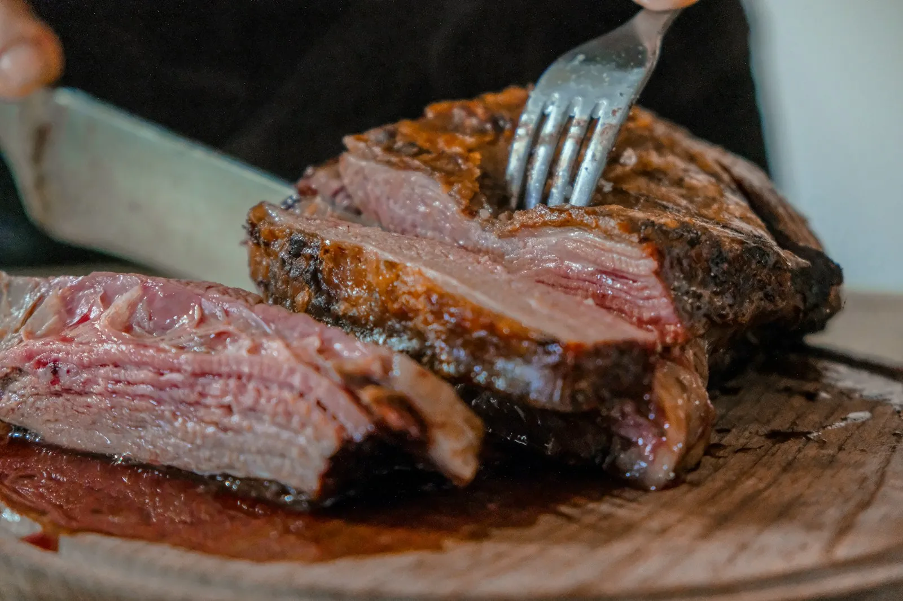
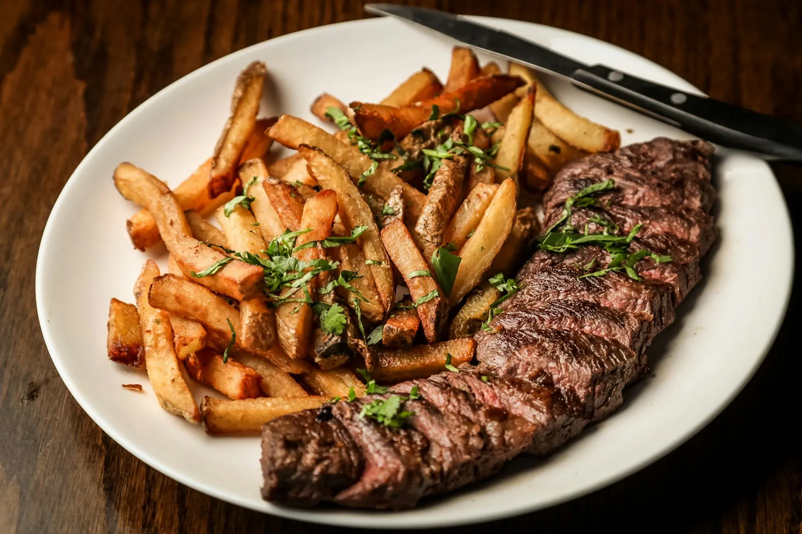
“Heerlijk vlees en een verzorgde slagerij, met toppersoneel die heel vriendelijk is.”
Sarah Deconinckop Google“Producten van hoge kwaliteit. Heel vriendelijke mensen.”
Johan Devosop Google“Vriendelijk. Vlotte bestelling en vooral, zeer goede kwaliteit.”
Jean Devarrewaereop Google“Zeer vriendelijke bediening en altijd lekker, vers vlees.”
Nic Dufoortop Google“Niets op aan te merken. Alles verzorgd en net. Een echte aanrader.”
Luc Hosteop Google| Maandag | 07:30 - 12:30 14:00 - 18:30 |
| Dinsdag | 07:30 - 12:30 14:00 - 18:30 |
| Woensdag | Gesloten |
| Donderdag | 07:30 - 12:30 14:00 - 18:30 |
| Vrijdag | 07:30 - 12:30 14:00 - 18:30 |
| Zaterdag | 07:30 - 12:30 14:00 - 18:00 |
| Zondag | 08:00 - 12:00 |
Rond feestdagen kunnen de uren anders zijn. Bel gerust even.
8870 Izegem (Kachtem)
Staat je vraag er niet tussen? Bel naar de winkel.
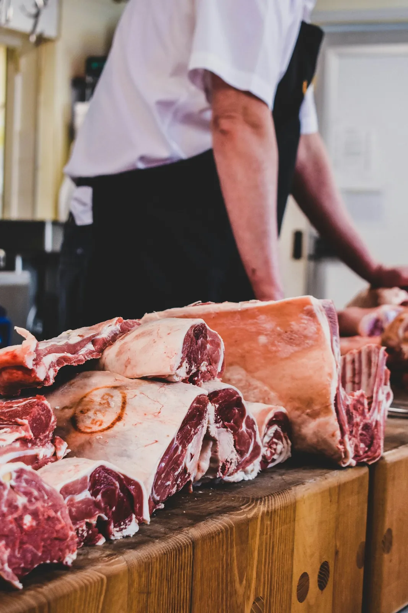
Ja. Bel naar 051 30 05 77 en zeg wat je wil en wanneer je het komt halen. Dan ligt het klaar.
Gebruik de rekenhulp hierboven als richtwaarde. Aan de toonbank wordt graag mee gerekend, zeker voor een feest.
Ja, op zondag van 08:00 tot 12:00.
Zeker. Dik of dun, in blokjes of in één stuk. Zeg het gewoon aan de toonbank.
Ik maakte deze demo voor jullie om te tonen wat er kan. Na een kort gesprek maak ik er iets veel persoonlijkers van, helemaal naar jullie wens.
Vrijblijvend. Ik kom langs of we bellen.
Op maat, op jullie eigen domein.
Geen voorschot. Jullie betalen pas als alles klaar is.
Hosting, domeinnaam en kleine wijzigingen, zoals nieuwe openingsuren.
Omdat een voorbeeld meer zegt dan een mail. Zo zien jullie meteen wat er kan, en het kost jullie niets.
Nee. Het gesprek is vrijblijvend. Vinden jullie het niks, dan is het daarmee gedaan.
Na ons gesprek staat jullie site binnen 10 tot 14 dagen online.
Zeker. Jullie domeinnaam kan gewoon blijven, de nieuwe site komt in de plaats van de oude.
Nee, dat doe ik op basis van ons gesprek. Eigen foto's zijn mooi meegenomen, maar niet nodig om te starten.